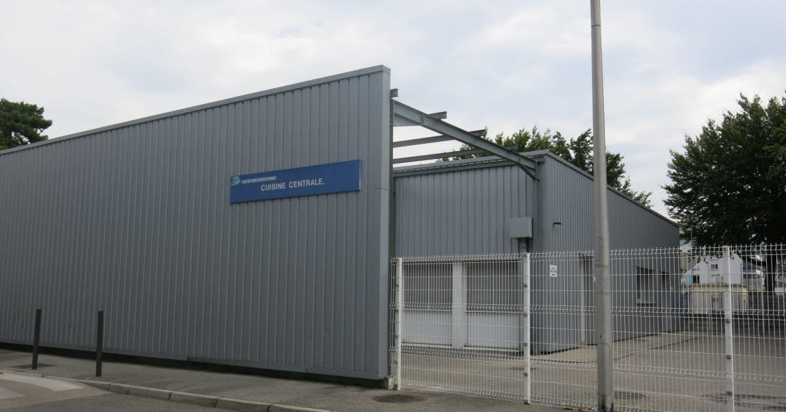
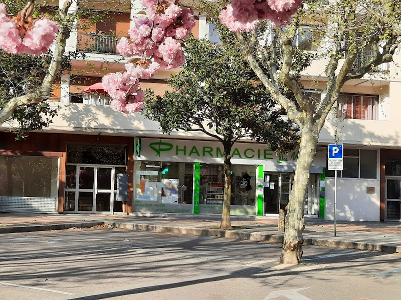

Mon Parcours Scolaire
-
2021-2022Bac STI2D option SIN
Saint Martin d'Hères.Baccalauréat Sciences et Technologies de l'Industrie et du Développement Durable option Système Informatique et Numérique.
Lycée Pablo Néruda -
2022 – 2023BTS SIO option SLAM,
Seyssinet-Pariset.BTS Services Informatiques aux Organisations option Solutions Logiciel et Application Métier.
Lycée Aristide Berges -
2023-2024BTS SIO 2 option SLAM,
Seyssinet-Pariset. -
Objectif 2024-2027DEVOPS en alternance,
EPSI Grenoble.
Expérience professionnelle :
Expérience à la cuisine centrale de Saint-Martin-d'Hères
J'ai effectué pendant les vacances d'été 2022 pour une durée de 1 mois un job à la cuisine centrale de Saint-Martin-d'Hères où j'ai été chargé de m'occuper de préparation de commande pour des collèges, écoles primaires, crèches et maison de retraite.
J'ai grâce à cette expérience pu améliorer mes compétences en travail d'équipe, mais aussi en autonomie, à être sérieux et en organisation.
Expérience à la pharmacie du Verderet
J'ai aussi pu effectuer un autre job d'été en 2019 de la même durée à la pharmacie du Verderet durant lequel j'ai été chargé de faire de la gestion de stock en arrière-boutique et de temps en temps de mise en relation avec de la clientèle.
Cette expérience m'a permis une nouvelle fois d'améliorer mes compétences en rigueur, autonomie, savoir garder son sang-froid et travail d'équipe.
Tableau de synthèse :
Voici un tableau de synthèse montrant les objectifs que j'ai pu acquérir durant tout le BTS SIO.